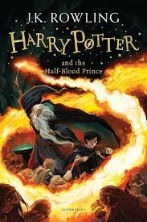
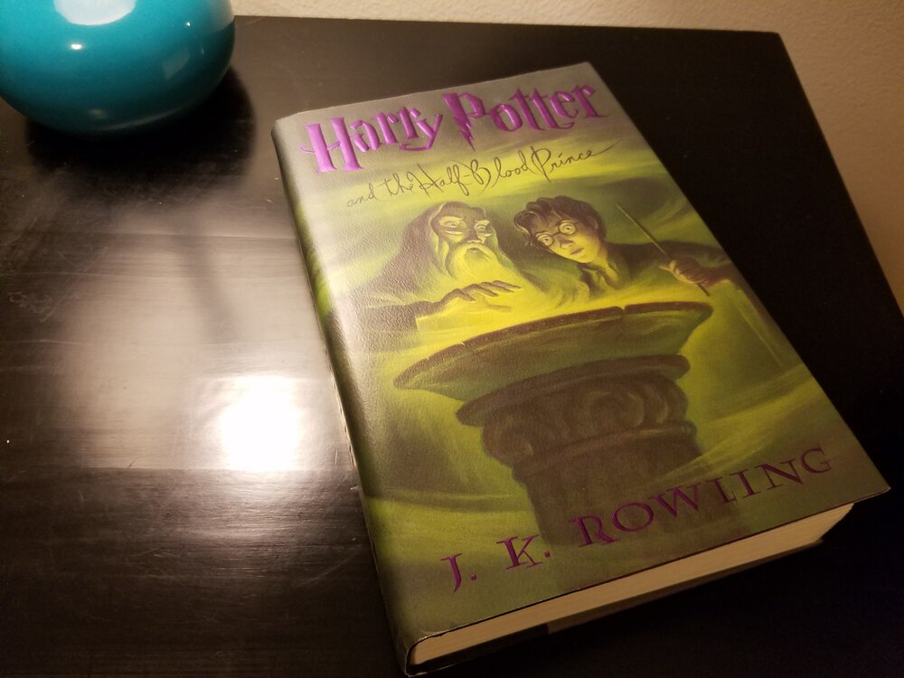
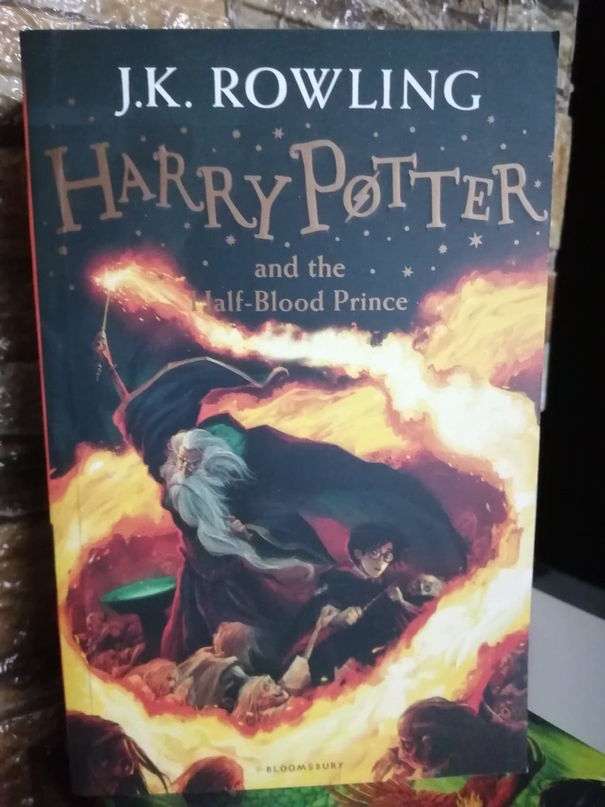
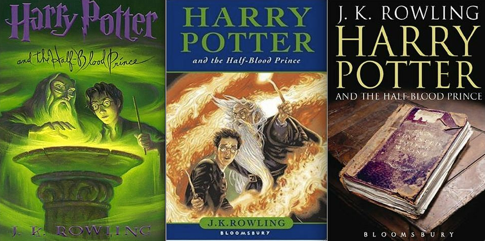
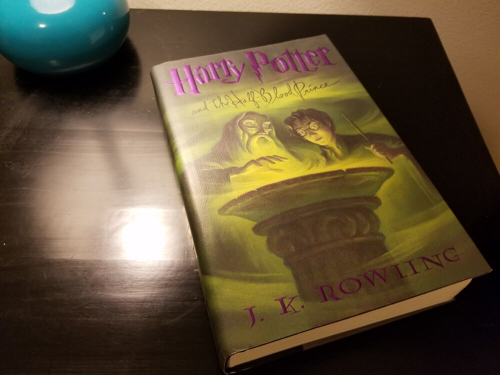
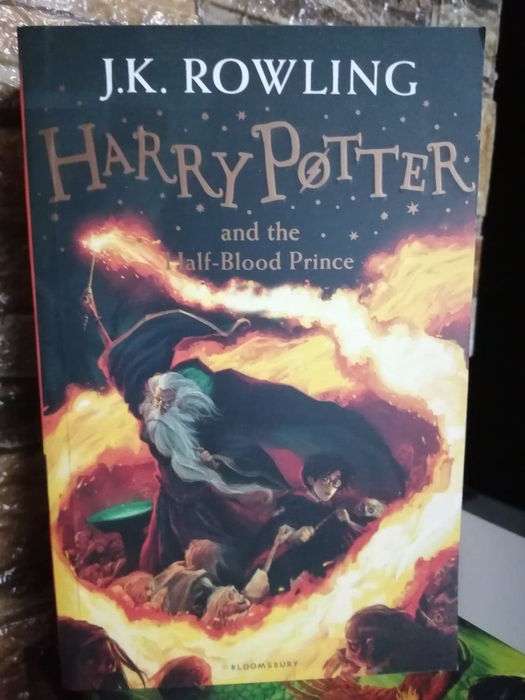
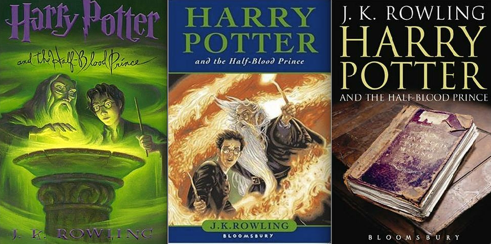

Description
Harry Potter and the Half-Blood Prince
"Harry Potter and the Half-Blood Prince" is the penultimate installment in J.K. Rowling's beloved fantasy series. In this captivating book, the wizarding world faces dark times as Voldemort's influence grows stronger, and Harry delves into the past to understand the present.
As Harry begins his sixth year at Hogwarts School of Witchcraft and Wizardry, he receives a mysterious potions textbook previously owned by the enigmatic Half-Blood Prince. This book contains valuable notes and spells that help Harry excel in his potions class, but it also raises questions about the true identity of its previous owner.
Meanwhile, Dumbledore, the headmaster of Hogwarts, takes Harry under his wing, providing private lessons to prepare him for the ultimate battle against Voldemort. Through these lessons, Harry learns about Voldemort's dark history, the horcruxes that contain pieces of the dark wizard's soul, and the importance of love and sacrifice.
Amidst these lessons and the strain of teenage relationships, Harry becomes increasingly aware of the dangers surrounding him. As he navigates through friendships, romantic entanglements, and the pressures of fulfilling his destiny, Harry must make difficult choices and face heart-wrenching losses.
"Harry Potter and the Half-Blood Prince" is a gripping tale that delves into the complexities of good and evil, the power of choices, and the bonds of friendship. It sets the stage for the epic conclusion of the series, as Harry and his friends prepare for the ultimate battle against the forces of darkness.
---------------------------------------------------------

Rating Price
5.0 20.0
***** USD
 




